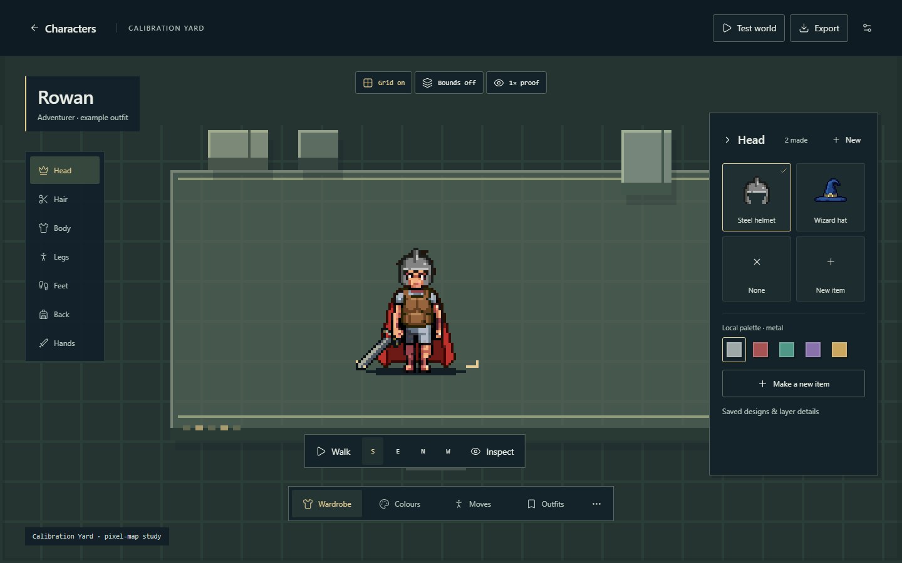
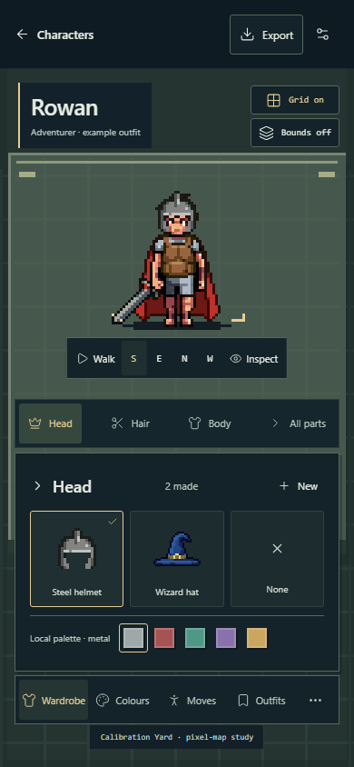
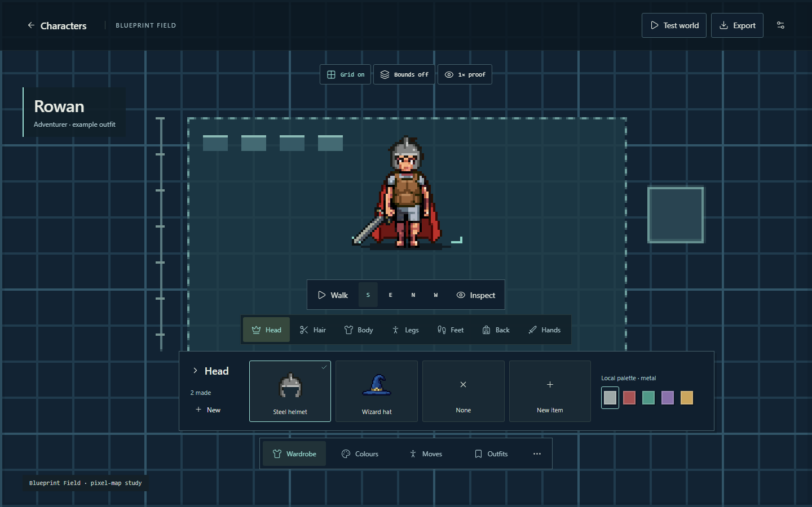
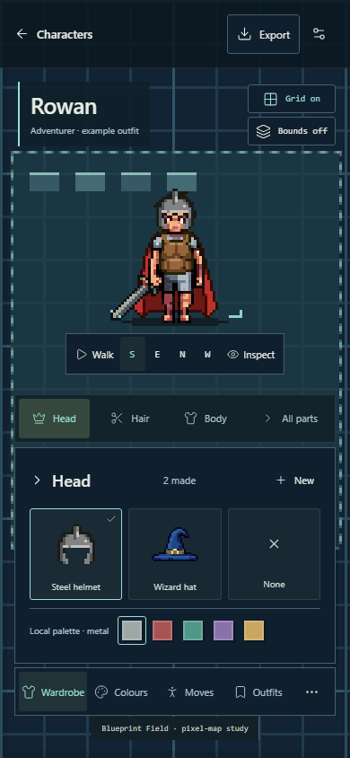
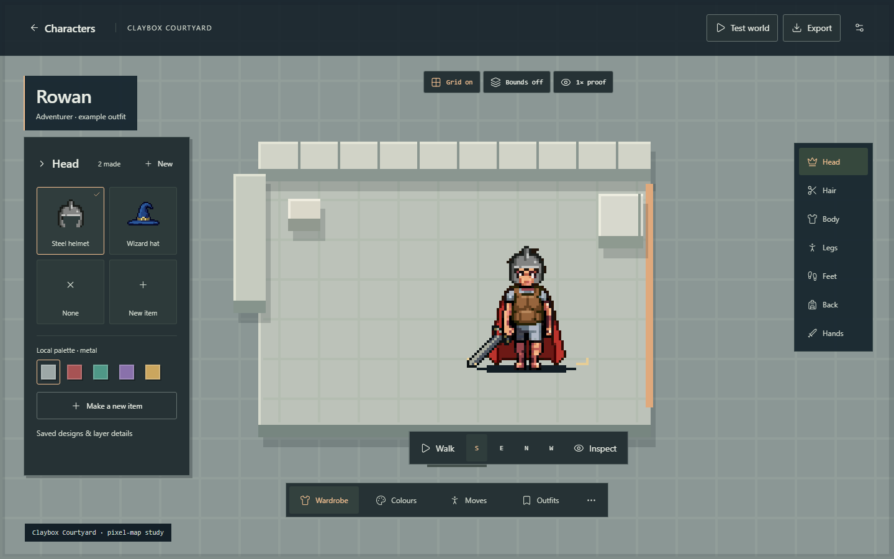
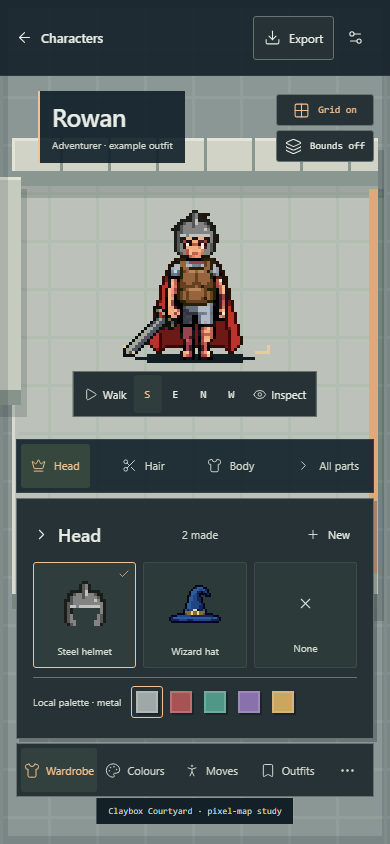
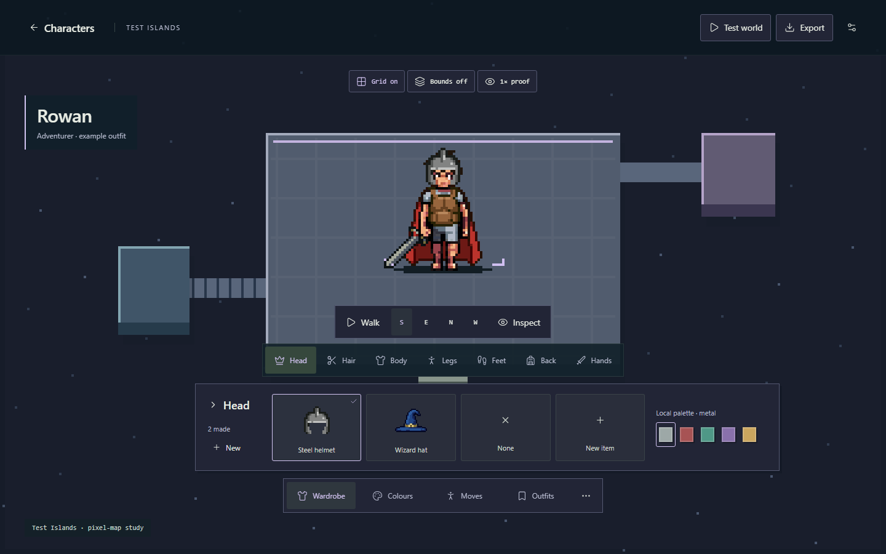
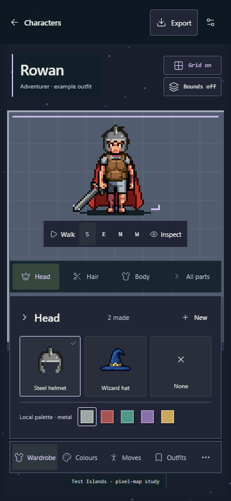

03 / Recommended
Calibration Yard
A restrained tile field with just enough geometry to feel playable. Best everyday inspection stage.


Quiet, playable-looking tile maps with inspection at the centre.
A restrained tile field with just enough geometry to feel playable. Best everyday inspection stage.


An abstract cyan map with a lower wardrobe tray. Strong digital test-space identity.


A pale blockout room with left-side browsing. The useful counterpoint for dark silhouettes.


Floating test modules and sparse bridges. The strongest sense of discovery, with more visual metaphor.

